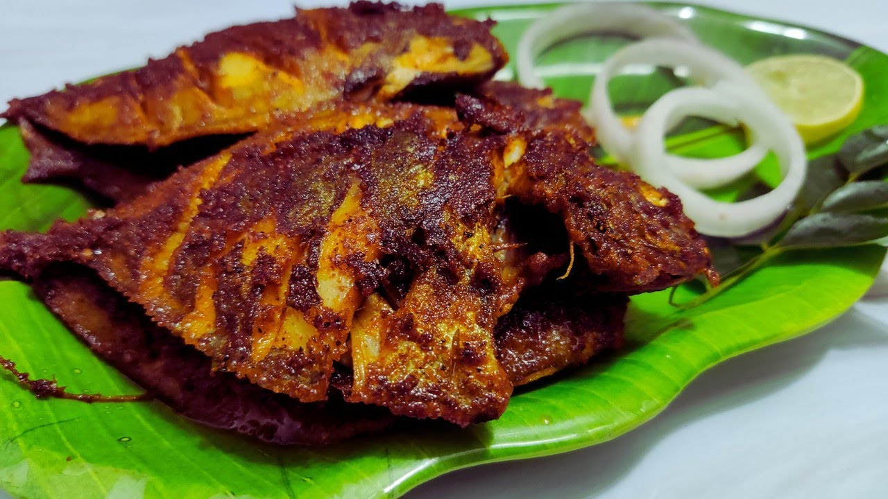

FISH FRY

Steps to make Fish fry:
Take fish pieces, wash them well under running water, apply some salt and turmeric to the fish pieces and rest it for few minutes.
In a bowl or a plate, add red chilli powder, turmeric powder, cumin seeds powder, dhaniya powder, salt as per taste, ginger garlic paste.
Add water gradually approx... about 2 to 3 tsp, mix it and make a thick paste.
Take some paste in your hands, take the fish piece and coat it all over the whole fish piece with the masala paste.
Coat all the fish pieces with the masala paste and marinate the fish for 10-15 minutes.
Frying coated fish pieces:
In a pan, add 3 tablespoon oil and heat it.
Place the fish pieces carefully and cook them for 5 minutes.
Flip the fish pieces and cook the other side too for 5 minutes.
Flip again and cook for 5 minutes on medium flame.
Each side should be shallow fried well for 10 minutes on low to medium flame.
Take the fish pieces out.